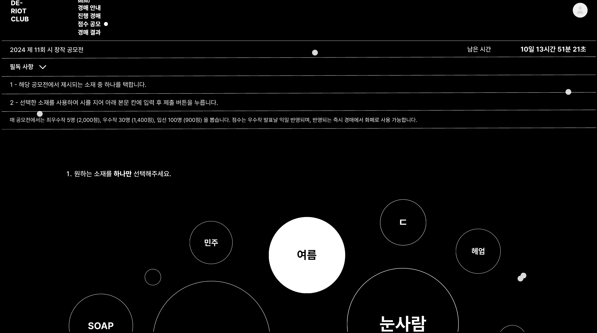
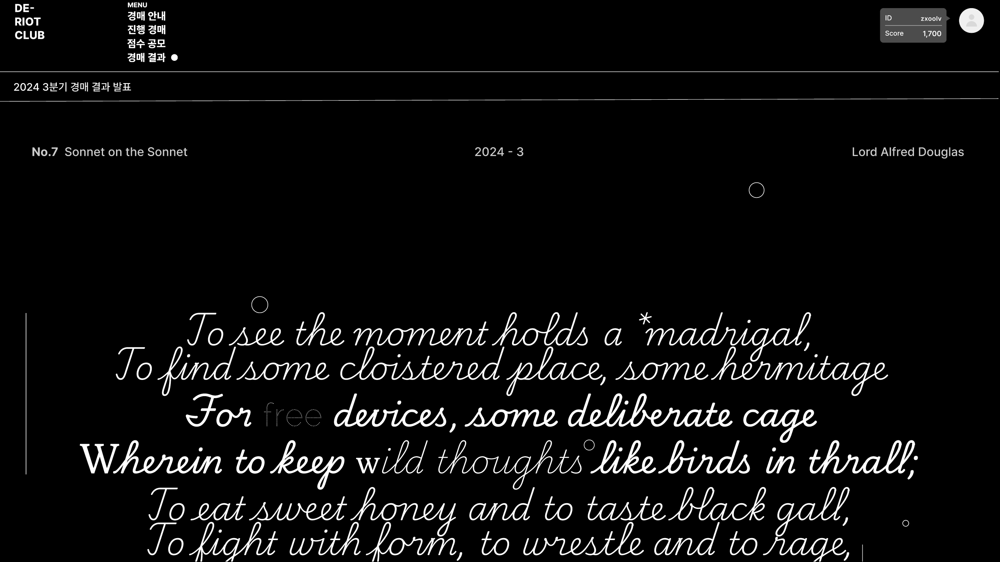

영국 시 경매 사이트 | 콘텐츠디자인 수업 과제로, 영국 화폐에서 소재를 도출해 제작한 UI 입니다 |
|---|
아카이빙 코멘트
저는 제인 오스틴이 새겨진 영국 10파운드 지폐에서 시와 자본이라는 소재를 가져와, 시 창작 능력 즉, 자본이 아닌 시 그 자체로 시의 저작권을 거래하는 가상의 사이트를 기획하였습니다. 그리고 자본만능주의와 대치되는 기획 특성을 생각해, 영국의 자본주의 영화 <The Liot Club>에서 이름을 따 와, The를 지우고 부정 접두사 ‘De-’를 붙여 <De-Riot Club>이란 사이트 명을 붙였습니다.
디자인은 타이포를 중심으로 구성하여, 영국 특유의 빈티지함과 동시에 모던한 무드를 표현하고자 했습니다. 시의 추상성이라는 특징을 생각해, ‘De-Riot Club’의 타이포 대신 형태를 구현해 로고를 만들었습니다. 그리고 빈티지한 무드가 돋보이는 ‘Pecita’ 폰트를 이용해 경매작 시 본문을 써, 행잉 페이퍼 목업에 씌워 경매작 콘텐츠를 제작했습니다. 이들 외에도, 전체적으로 다양한 폰트를 이용한 타이포그래피와 선으로 사이트를 꾸몄습니다.
개인적으로 과제를 이어나가면서 UI/UX 디자인에 재미를 붙이게 되어 뜻 깊었던 시간이었습니다. 상업성이 강한 디지털 디자인을 하면서 아날로그 예술을 주로 다루니 여러가지 생각이 들기도 했는데, 어쨌든 모든 디자인과 예술을 소중히 하고 싶다는 생각이 들었습니다.
|  |  |